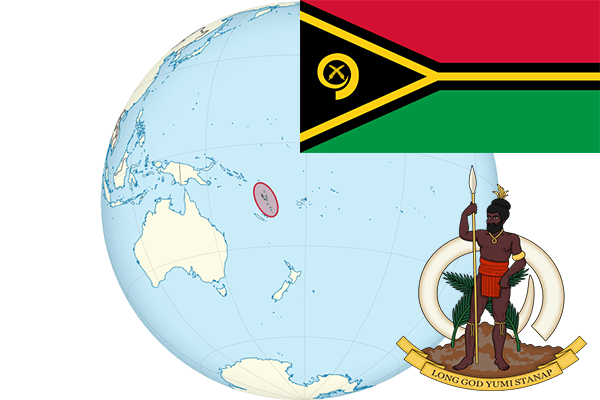

To`liq nomi: Vanuatu Respublikasi
Region: Tinch okeani
Qonunchilik shakli: Respublika
Mustaqillik kuni: 30 iyul 1980-yil
Poytaxt: Port-Vila
Maydoni: 12,200 km²
Chegaradosh davlatlari: Yo’q
Aholisi: 270,402 (2016-yil)
Aholi zichligi: 19.7/km2
Aholining o`rtacha yoshi: 72,17 yil
Rasmiy tili: Bislam va Fransuz tillari
Dini: Xristian
Pul birligi: Vatu
Telefon prefiksi: +678
Internet domen: .vu
Xalqaro tashkilotlarga a`zoligi: -
Dengiz va okeanlarga chiqishi: Tinch okeani
YIM: Butun: $773 mln (2017-yil)
Yirik shaharlari: Port-Vila